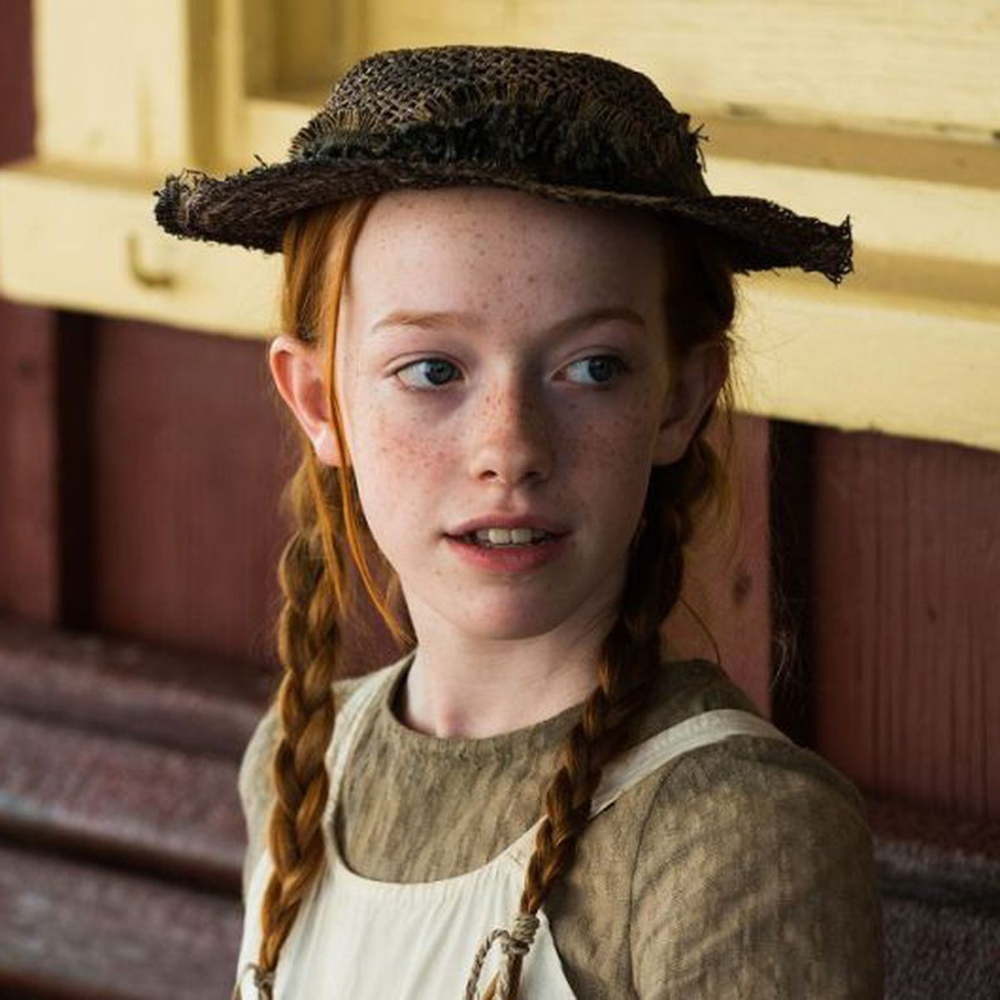

Anne é uma série canadense baseada no romance de 1908 Anne de Green Gables, que chegou à Netflix em 12 de maio de 2017 intitulada Anne with an E. Abordando temas atuais como identidade, bullying e preconceito, ela nos inspira e faz refletir de uma forma leve e delicada.
O que esperar da Série...
Ambientada na ilha de Príncipe Eduardo no final do século XIX, a série acompanha a vida de Anne Shirley, uma jovem órfã que enfrenta adversidades e desafios para encontrar seu lugar no mundo e ser amada. Após uma infância de abusos entre orfanatos e casas de estranhos, é enviada por engano para viver com um casal de irmãos em idade avançada.
Com o passar do tempo, a garota de 13 anos transforma a vida de Marilla, Matthew Cuthbert e de toda a cidade com seu jeito extrovertido, sua inteligência e imaginação.
Anne Shirley é aquela personagem encantadora, que já se apresenta como alguém extremamente “complexo”, ainda que seja apenas uma garota de 13 anos. Conciliando seus medos, suas lembranças perturbadoras, seu amor pela vida e por tudo que a cerca e seus muitos sonhos, a cada desenvolvimento seu, nos damos conta de que ela tem sempre mais a nos oferecer.
PERSONAGENS PRINCIPAIS
